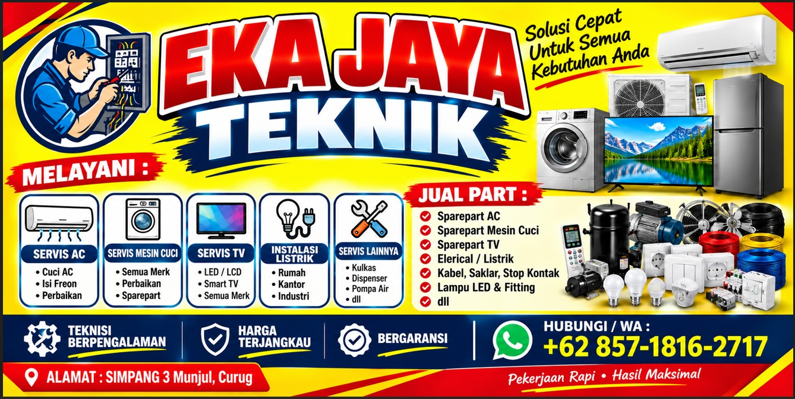
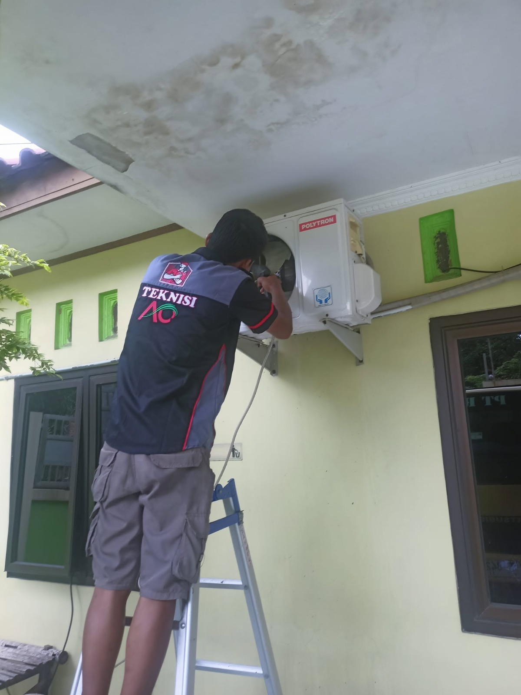

❄
Servis AC
Cuci AC, isi freon, dan perbaikan AC.

Layanan yang tersedia di Eka Jaya Teknik untuk kebutuhan rumah, toko, maupun tempat usaha.
Cuci AC, isi freon, dan perbaikan AC.
Perbaikan mesin cuci berbagai merek.
Servis TV LED, LCD, Smart TV, dan berbagai merek.
Pemasangan dan perbaikan instalasi listrik.
Kulkas, dispenser, pompa air, dan peralatan lainnya.
Tanyakan ketersediaan barang sebelum datang ke toko.
Dokumentasi pengerjaan Eka Jaya Teknik.

Melayani kebutuhan servis elektronik, sparepart, dan pekerjaan listrik untuk pelanggan di sekitar Munjul, Curug dan sekitarnya.
Hubungi Eka Jaya Teknik atau buka lokasi toko langsung di Google Maps.